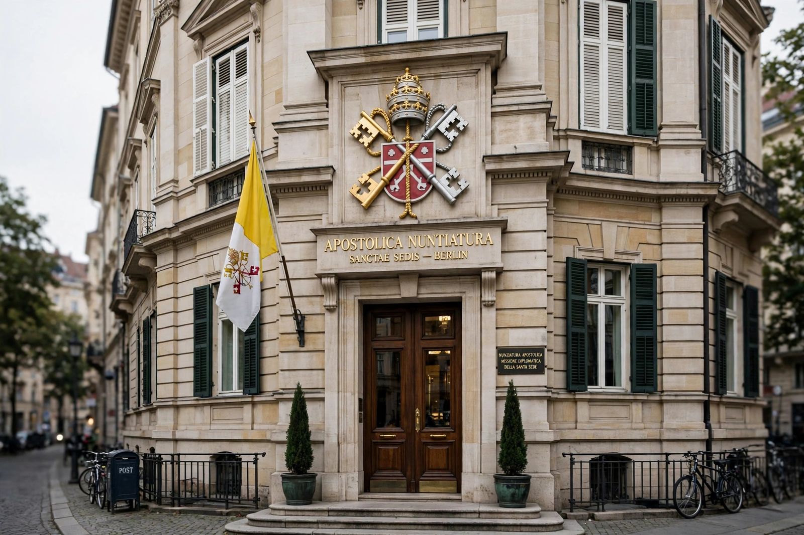

Nuncio

An apostolic nuncio (Latin: nuntius, "messenger") is the diplomatic representative of the Holy See to a state or international organisation, ranking as an ambassador. Nuncios are normally titular archbishops appointed by the Pope, and their mission — a nunciature — functions as the embassy of the Holy See. A representative of lower or equivalent standing in some postings is styled internuncio (historically second class), while a papal legate or apostolic delegate may be sent ad hoc; an apostolic delegate, unlike a nuncio, is accredited to the local church rather than to the government.
Dual role
Uniquely among diplomats, a nuncio has both an external and an internal function: representing the Holy See to the state, and representing the Pope to the Catholic Church in that country, including liaising with bishops' conferences and participating in the process by which bishops are appointed. Nunciatures are among the oldest permanent diplomatic missions in the world, the system having developed in the 16th century.
Precedence
The Vienna Convention on Diplomatic Relations (1961) places nuncios in the first class of heads of mission, alongside ambassadors. By long-standing custom in many historically Catholic states, the nuncio serves as dean of the diplomatic corps, the senior ambassador by office rather than by date of accreditation. See also Diplomatic rank and Diplomatic mission.